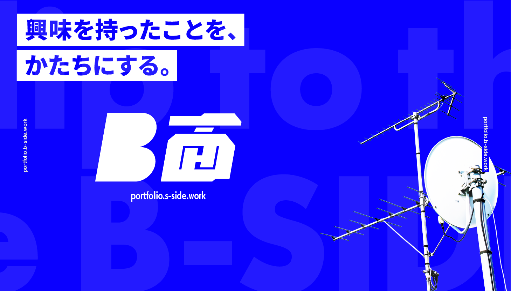
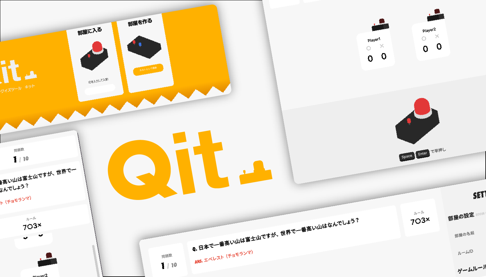
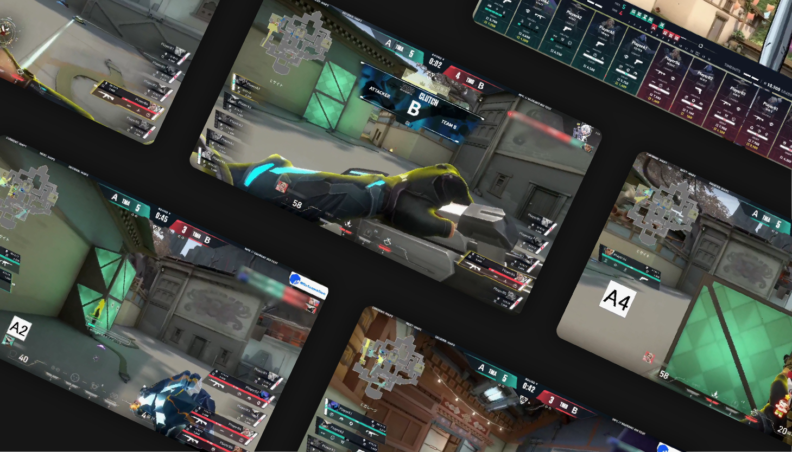
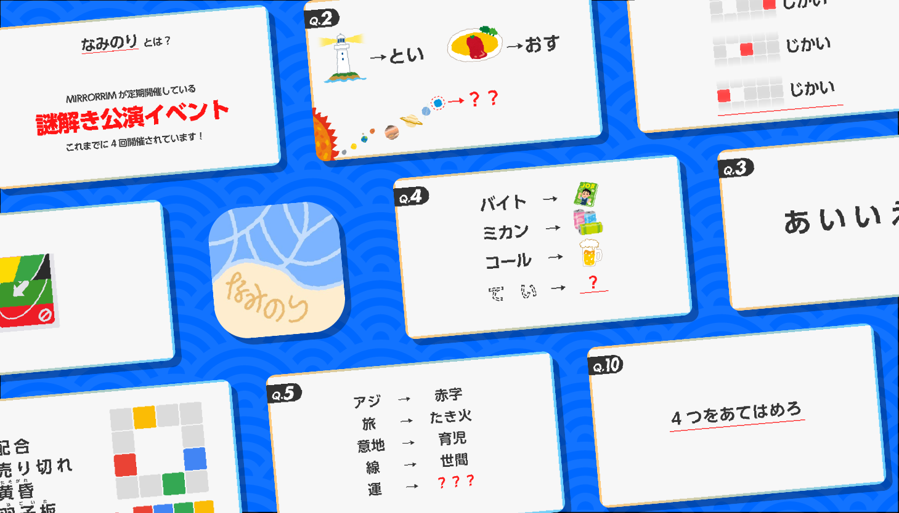
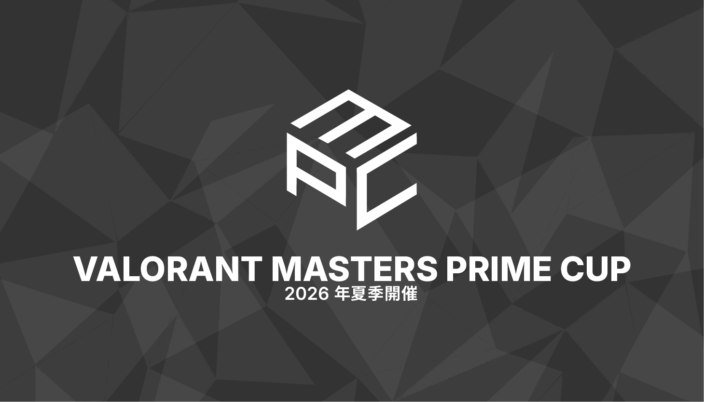
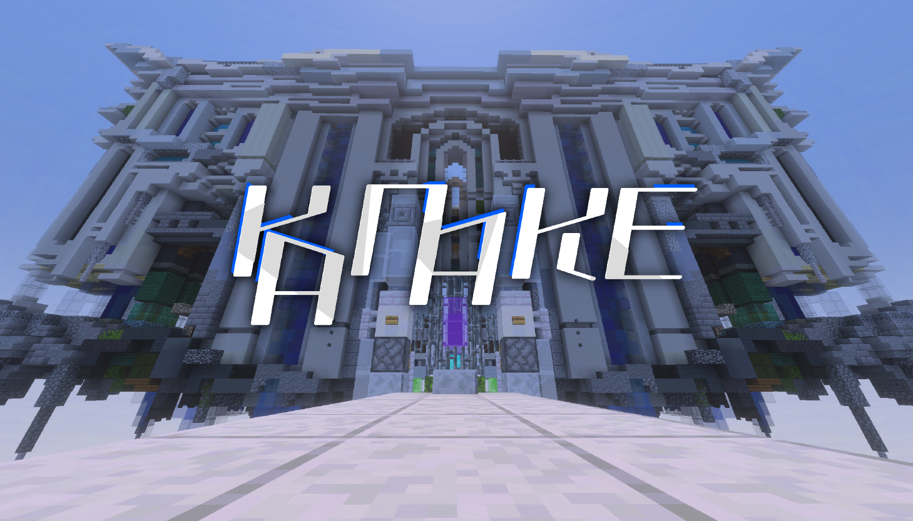
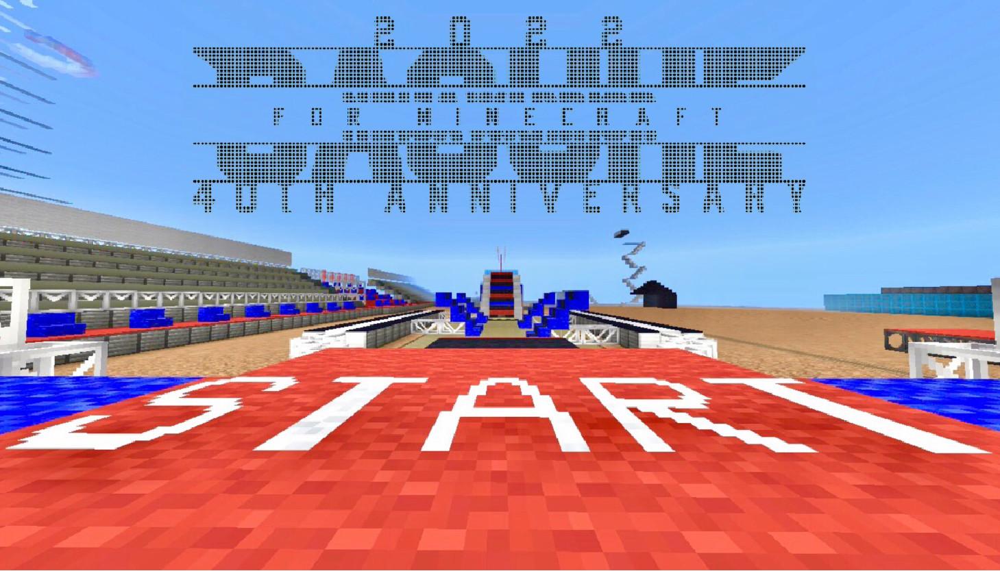
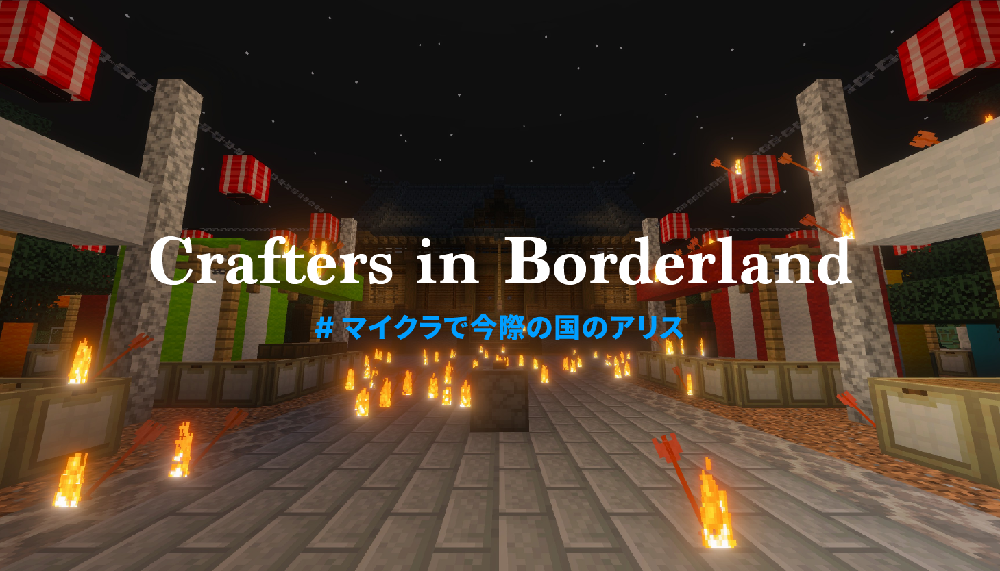

ポートフォリオ
portfolio.b-side.work

私の作品を見て行ってやって
ポートフォリオ
portfolio.b-side.work
2007年生まれ。18歳。
現在は大学に在学しており、主に情報学について学んでいます。エンタメが大好きで、インターネット上でさまざまな企画運営・主催を行うことが多く、デザイン・技術面で協力していたりします。eスポーツが好きで、将来的には関わってみたいと思ったり。（ゲームはとんでもなく下手）
・Adobe illustrator
・Adobe Premiere
・YMM4
・Aviutl
・JavaScript
・Python

このポートフォリオです

私が所属しているコミュニティー用に作った
早押しクイズ支援ツールです

VALORANTの小規模大会用に設計された
動的なオーバーレイです

「あの謎解き企画『なみのり』が、特別編になって登場！」
ARGチックな謎解き企画です

たぶん、演出を一番頑張ってる
2026年夏季開催予定のVALORANTコミュニティー大会です

2ステージ構成の空中神殿を攻略する
100人規模のMinecraftアスレチック企画です

TBS放送「SASUKE」を再現した
100人規模のMinecraftギミックアスレチック企画です

Netflixドラマ「今際の国のアリス」を再現した
Minecraftサバイバル企画です
Webデザイン・Webアプリ開発・企画運営・配信デザインなど、
幅広い分野で活動しています。
| ご依頼 | 料金のめやす |
|---|---|
| Webデザイン | ¥15,000~ |
| Minecraftアドオン | ¥2,000~ |
上記のご依頼以外でも「こういうもの作れる？」という段階からでも大歓迎です。
何かお力になれそうなことがあれば、ぜひお気軽にご相談ください。
©︎ B-SIDE Portfolio